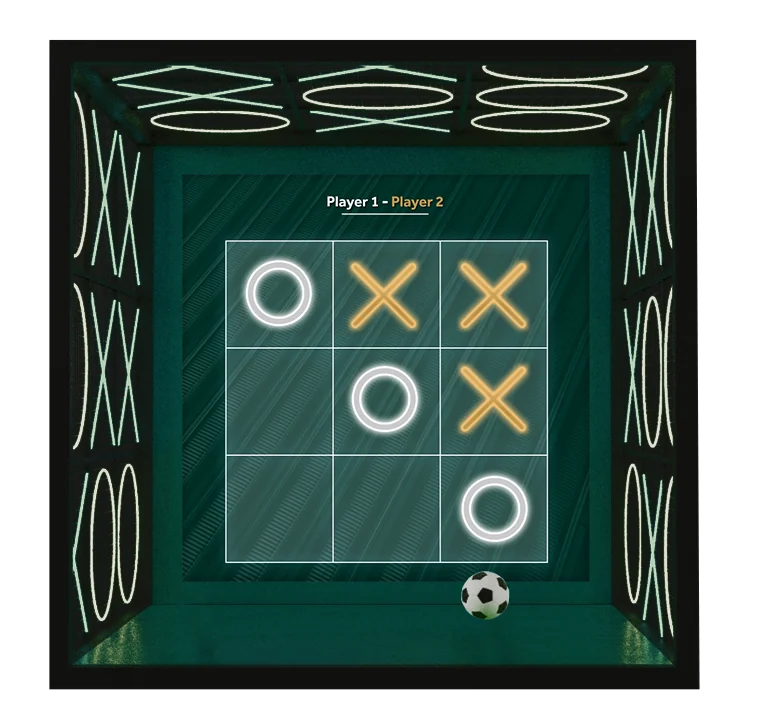

Board as rear-wall focal point
The composite contains a complete enclosure view, three-by-three grid, two player labels, luminous ring/cross marks and a ball at the base.
The game board becomes part of the room.
Explore the story
Connect a recognizable grid game to an enclosure-level visual identity.
A large board fills the rear wall while oversized X and O motifs continue over the sides and ceiling. A ball at the base introduces the proposed physical-play context.
The composite contains a complete enclosure view, three-by-three grid, two player labels, luminous ring/cross marks and a ball at the base.
The concept places a three-by-three noughts-and-crosses grid on the rear wall of a dark, shallow enclosure.
White rings and gold crosses stand out against the green screen, with matching player labels above; oversized X and O motifs continue across the side walls and ceiling.
Explore the complete compositions and interface states. Select any image for a closer look.
Structure, interaction and visual decisions that give the work its character.
RoleContribution awaiting confirmation
AssetsPrivate evidence draft. Individual contribution, implementation and public-use permission remain unverified. The PSD contains a smart object named XO Tennis_2 inside the Football event archive, indicating a reused or cross-event component whose original source and author need confirmation. The enclosure/scene, grid interface and ball may have different supplied, licensed, collaborator or AI-assisted sources. No original geometry, original illustration, complete event authorship or independent commission is claimed.
StatusPrivate installation-concept draft; contribution, interaction implementation and public use unverified